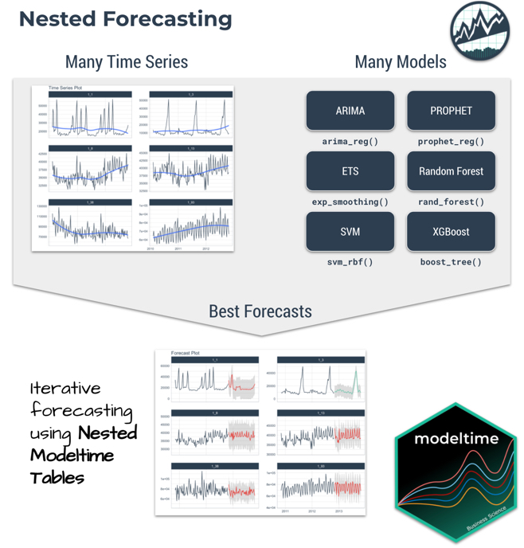
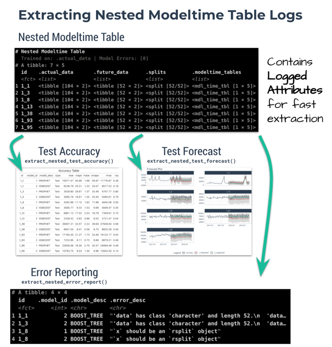
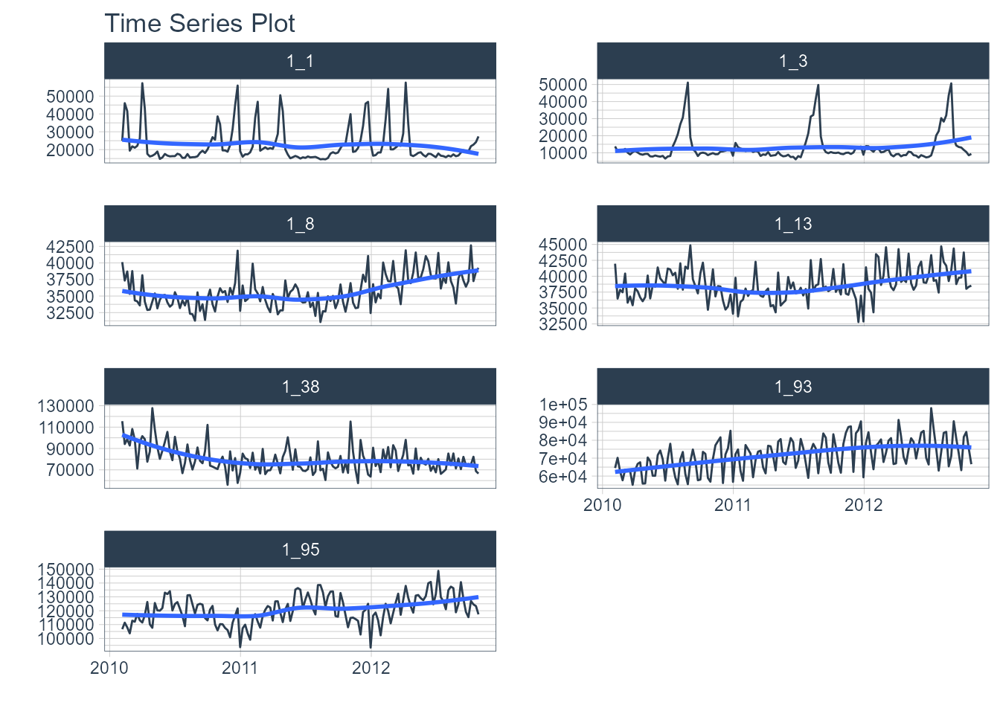
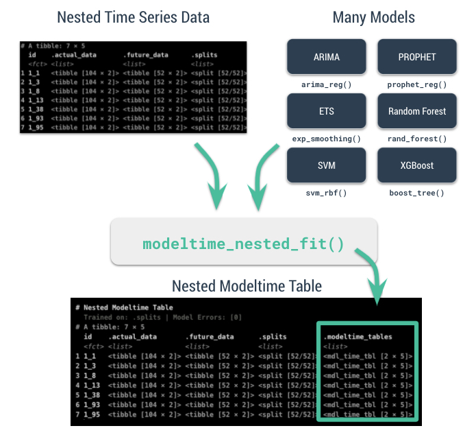
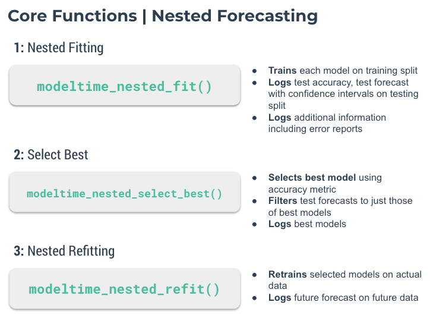
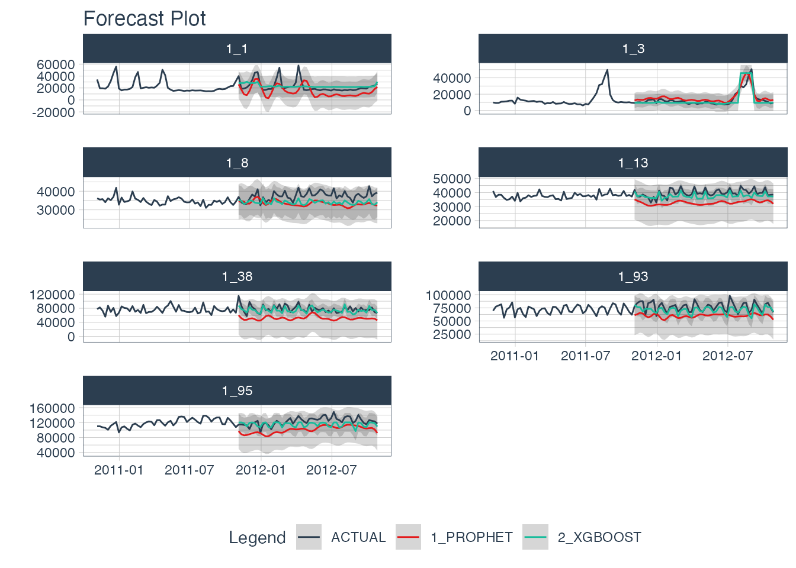
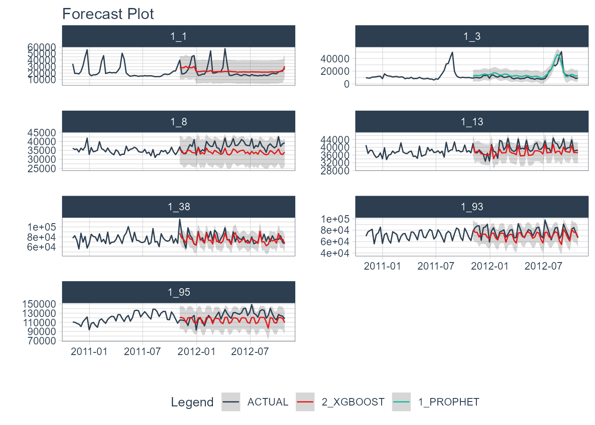

Iteratively forecast with nested modeling
Why is nested forecasting important? For starters, the ability to iteratively forecast time series with many models that are trained on many individual groups has been a huge request from students in our Time Series Course. Why? Because two methods exist that get results:
Global Modeling: Best for scalability using a Global Models and a Panel Data structure. See Forecasting with Global Models.
Iterative Forecasting: Best for accuracy using a Nested Data Structure. Takes longer than global model (more resources due to for-loop iteration), but can yield great results.
We’ve incorporated a new approach called “nested forecasting” to help perform Iterative Forecasting.
Nested Forecasting
The core idea of nested forecasting is to convert a dataset containing many time series groups into a nested data set, then fit many models to each of the nested datasets. The result is an iterative forecasting process that generates Nested Modeltime Tables with all of the forecast attributes needed to make decisions.

Important Concepts: Logging & Attributes
A new feature to nested forecasting workflow is logged attributes, which is very useful in complex workflows where loops (iteration) is performed. In a Nested Modeltime Table, we push as many operations as possible into the fitting and refitting stages, logging important aspects including:
-
Test Accuracy:
extract_nested_test_accuracy() -
Test Forecast:
extract_nested_test_forecast() -
Error Reports:
extract_nested_error_report() -
Best Models:
extract_nested_best_model_report() -
Future Forecasts:
extract_nested_future_forecast()
While this deviates from the traditional Modeltime Workflow, we find that logging vastly speeds up experimentation and information retrieval especially when the number of time series increases.

Getting Started
We’ll go through a short tutorial on Nested Forecasting. The first thing to do is to load the following libraries:
Dataset
Next, let’s use the walmart_sales_weekly dataset that comes with timetk.
data_tbl <- walmart_sales_weekly %>%
select(id, Date, Weekly_Sales) %>%
set_names(c("id", "date", "value"))
data_tbl
#> # A tibble: 1,001 × 3
#> id date value
#> <fct> <date> <dbl>
#> 1 1_1 2010-02-05 24924.
#> 2 1_1 2010-02-12 46039.
#> 3 1_1 2010-02-19 41596.
#> 4 1_1 2010-02-26 19404.
#> 5 1_1 2010-03-05 21828.
#> 6 1_1 2010-03-12 21043.
#> 7 1_1 2010-03-19 22137.
#> 8 1_1 2010-03-26 26229.
#> 9 1_1 2010-04-02 57258.
#> 10 1_1 2010-04-09 42961.
#> # … with 991 more rowsThe problem with this dataset is that it’s set up for panel data modeling. The important columns are:
“id”: This separates the time series groups (in this case these represent sales from departments in a walmart store)
“date”: This is the weekly sales period
“value”: This is the value for sales during the week and store/department
We can visualize this by time series group to expose the differences in sales by department.
data_tbl %>%
group_by(id) %>%
plot_time_series(
date, value, .interactive = F, .facet_ncol = 2
)
We can clearly see that there are 7 time series groups with different weekly sales patterns.
Nested Forecasting Preparation
There are two key components that we need to prepare for:
Nested Data Structure: Most critical to ensure your data is prepared (covered next)
Nested Modeltime Workflow: This stage is where we create many models, fit the models to the data, and generate forecasts at scale
Conceptually, the workflow looks like this where we combine nested data and tidymodels workflows using an upcoming function, modeltime_nested_fit().

Data Preparation
The most critical stage in “Nested Forecasting” is data preparation, making sure that the input to the nested forecasting workflow is in the appropriate structure. We’ve included several functions to help that involve a bit of forethought that can be broken into 3 steps:
Extending each of the times series: How far into the future do you need to predict for each time series? See
extend_timeseries().Nesting by the grouping variable: This is where you create the nested structure. You’ll identify the ID column that separates each time series, and the number of timestamps to include in the “.future_data” and optionally “.actual_data”. Typically, you’ll select the same
.length_futureas your extension from the previous step. Seenest_timeseries().Train/Test Set Splitting: Finally, you’ll take your
.actual_dataand convert into train/test splits that can be used for accuracy and confidence interval estimation. Seesplit_nested_timeseries().
Here are the 3-steps in action:
nested_data_tbl <- data_tbl %>%
# 1. Extending: We'll predict 52 weeks into the future.
extend_timeseries(
.id_var = id,
.date_var = date,
.length_future = 52
) %>%
# 2. Nesting: We'll group by id, and create a future dataset
# that forecasts 52 weeks of extended data and
# an actual dataset that contains 104 weeks (2-years of data)
nest_timeseries(
.id_var = id,
.length_future = 52,
.length_actual = 52*2
) %>%
# 3. Splitting: We'll take the actual data and create splits
# for accuracy and confidence interval estimation of 52 weeks (test)
# and the rest is training data
split_nested_timeseries(
.length_test = 52
)
nested_data_tbl
#> # A tibble: 7 × 4
#> id .actual_data .future_data .splits
#> <fct> <list> <list> <list>
#> 1 1_1 <tibble [104 × 2]> <tibble [52 × 2]> <split [52|52]>
#> 2 1_3 <tibble [104 × 2]> <tibble [52 × 2]> <split [52|52]>
#> 3 1_8 <tibble [104 × 2]> <tibble [52 × 2]> <split [52|52]>
#> 4 1_13 <tibble [104 × 2]> <tibble [52 × 2]> <split [52|52]>
#> 5 1_38 <tibble [104 × 2]> <tibble [52 × 2]> <split [52|52]>
#> 6 1_93 <tibble [104 × 2]> <tibble [52 × 2]> <split [52|52]>
#> 7 1_95 <tibble [104 × 2]> <tibble [52 × 2]> <split [52|52]>This creates a nested tibble with “.actual_data”, “.future_data”, and “.splits”. Each column will help in the nested modeltime workflow.
Nested Modeltime Workflow
Next, we move into the Nested Modeltime Workflow now that nested data has been created. The Nested Modeltime Workflow includes 3 core functions:
Modeling Fitting: This is the training stage where we fit to training data. The test forecast is generated from this step. See
modeltime_nested_fit().Model Evaluation and Selection: This is where we review model performance and select the best model by minimizing or maximizing an error metric. See
modeltime_nested_select_best().Model Refitting: This is the final fitting stage where we fit to actual data. The future forecast is generated from this step. See
modeltime_nested_refit().

Step 1: Create Tidymodels Workflows
First, we create tidymodels workflows for the various models that you intend to create.
Prophet
A common modeling method is prophet, that can be created using prophet_reg(). We’ll create a workflow. Note that we use the extract_nested_train_split(nested_data_tbl) to help us build preprocessing features.
rec_prophet <- recipe(value ~ date, extract_nested_train_split(nested_data_tbl))
wflw_prophet <- workflow() %>%
add_model(
prophet_reg("regression", seasonality_yearly = TRUE) %>%
set_engine("prophet")
) %>%
add_recipe(rec_prophet)XGBoost
Next, we can use a machine learning method that can get good results: XGBoost. We will add a few extra features in the recipe feature engineering step to generate features that tend to get better modeling results. Note that we use the extract_nested_train_split(nested_data_tbl) to help us build preprocessing features.
rec_xgb <- recipe(value ~ ., extract_nested_train_split(nested_data_tbl)) %>%
step_timeseries_signature(date) %>%
step_rm(date) %>%
step_zv(all_predictors()) %>%
step_dummy(all_nominal_predictors(), one_hot = TRUE)
wflw_xgb <- workflow() %>%
add_model(boost_tree("regression") %>% set_engine("xgboost")) %>%
add_recipe(rec_xgb)Step 2: Nested Modeltime Tables
With a couple of modeling workflows in hand, we are now ready to test them on each of the time series. We start by using the modeltime_nested_fit() function, which iteratively fits each model to each of the nested time series train/test “.splits” column.
nested_modeltime_tbl <- modeltime_nested_fit(
# Nested data
nested_data = nested_data_tbl,
# Add workflows
wflw_prophet,
wflw_xgb
)
#> Fitting models on training data... ■■■■■ 14% | ETA:…
#> Fitting models on training data... ■■■■■■■■■■■■■■ 43% | ETA:…
#> Fitting models on training data... ■■■■■■■■■■■■■■■■■■■■■■ 71% | ETA:…
#> Fitting models on training data... ■■■■■■■■■■■■■■■■■■■■■■■■■■■■■■■ 100% | ETA:…
nested_modeltime_tbl
#> # Nested Modeltime Table
#>
#> Trained on: .splits | Model Errors: [0]
#> # A tibble: 7 × 5
#> id .actual_data .future_data .splits .modeltime_tables
#> <fct> <list> <list> <list> <list>
#> 1 1_1 <tibble [104 × 2]> <tibble [52 × 2]> <split [52|52]> <mdl_time_tbl [2 ×…
#> 2 1_3 <tibble [104 × 2]> <tibble [52 × 2]> <split [52|52]> <mdl_time_tbl [2 ×…
#> 3 1_8 <tibble [104 × 2]> <tibble [52 × 2]> <split [52|52]> <mdl_time_tbl [2 ×…
#> 4 1_13 <tibble [104 × 2]> <tibble [52 × 2]> <split [52|52]> <mdl_time_tbl [2 ×…
#> 5 1_38 <tibble [104 × 2]> <tibble [52 × 2]> <split [52|52]> <mdl_time_tbl [2 ×…
#> 6 1_93 <tibble [104 × 2]> <tibble [52 × 2]> <split [52|52]> <mdl_time_tbl [2 ×…
#> 7 1_95 <tibble [104 × 2]> <tibble [52 × 2]> <split [52|52]> <mdl_time_tbl [2 ×…This adds a new column with .modeltime_tables for each of the data sets and has created several logged attributes that are part of the “Nested Modeltime Table”. We also can see that the models were trained on “.splits” and none of the models had any errors.
Step 3: Logged Attributes
During the forecasting, the iterative modeltime fitting process logs important information that enable us to evaluate the models. These logged attributes are accessable with “extract” functions.
Extract Nested Test Accuracy
Using the extract_nested_test_accuracy(), we can get the accuracy measures by time series and model. This allows us to see which model performs best on which time series.
nested_modeltime_tbl %>%
extract_nested_test_accuracy() %>%
table_modeltime_accuracy(.interactive = F)| Accuracy Table | |||||||||
|---|---|---|---|---|---|---|---|---|---|
| id | .model_id | .model_desc | .type | mae | mape | mase | smape | rmse | rsq |
| 1_1 | 1 | PROPHET | Test | 10071.47 | 45.88 | 1.99 | 59.97 | 11776.87 | 0.38 |
| 1_1 | 2 | XGBOOST | Test | 6236.79 | 25.31 | 1.23 | 24.57 | 9017.22 | 0.19 |
| 1_3 | 1 | PROPHET | Test | 3539.80 | 29.87 | 1.37 | 25.46 | 4707.77 | 0.80 |
| 1_3 | 2 | XGBOOST | Test | 3085.78 | 18.81 | 1.20 | 20.40 | 5085.81 | 0.79 |
| 1_8 | 1 | PROPHET | Test | 4282.96 | 11.15 | 1.82 | 11.96 | 4845.08 | 0.00 |
| 1_8 | 2 | XGBOOST | Test | 3585.77 | 9.33 | 1.53 | 9.89 | 4009.47 | 0.30 |
| 1_13 | 1 | PROPHET | Test | 6861.13 | 17.02 | 2.53 | 18.78 | 7309.61 | 0.15 |
| 1_13 | 2 | XGBOOST | Test | 2338.42 | 5.83 | 0.86 | 6.02 | 2721.47 | 0.54 |
| 1_38 | 1 | PROPHET | Test | 26007.21 | 32.57 | 2.22 | 39.60 | 27938.83 | 0.08 |
| 1_38 | 2 | XGBOOST | Test | 6847.04 | 8.47 | 0.58 | 8.75 | 8825.28 | 0.40 |
| 1_93 | 1 | PROPHET | Test | 17165.30 | 21.37 | 1.73 | 24.46 | 19123.17 | 0.03 |
| 1_93 | 2 | XGBOOST | Test | 7233.95 | 9.11 | 0.73 | 9.66 | 8879.21 | 0.49 |
| 1_95 | 1 | PROPHET | Test | 22836.06 | 18.30 | 2.75 | 20.37 | 24094.49 | 0.48 |
| 1_95 | 2 | XGBOOST | Test | 10783.75 | 8.54 | 1.30 | 8.96 | 12843.50 | 0.14 |
Extract Nested Test Forecast
Next, we can visualize the test forecast with extract_nested_test_forecast().
nested_modeltime_tbl %>%
extract_nested_test_forecast() %>%
group_by(id) %>%
plot_modeltime_forecast(
.facet_ncol = 2,
.interactive = FALSE
)
Extract Nested Error Logs
If any of the models have errors, then we can investigate the error logs with extract_nested_error_report(). Fortunately, we don’t have any errors, but if we did we could investigate further.
nested_modeltime_tbl %>%
extract_nested_error_report()
#> # A tibble: 0 × 4
#> # … with 4 variables: id <fct>, .model_id <int>, .model_desc <chr>,
#> # .error_desc <chr>Step 4: Select the Best
Using the accuracy data, we can pick a metric and select the best model based on that metric. The available metrics are in the default_forecast_accuracy_metric_set(). Make sure to select minimize based on the metric. The filter_test_forecasts parameter tells the function to filter the logged test forecasts to just the best.
best_nested_modeltime_tbl <- nested_modeltime_tbl %>%
modeltime_nested_select_best(
metric = "rmse",
minimize = TRUE,
filter_test_forecasts = TRUE
)This identifies which models should be used for the final forecast. With the models selected, we can make the future forecast.
Extract Nested Best Model Report
The best model selections can be accessed with extract_nested_best_model_report().
best_nested_modeltime_tbl %>%
extract_nested_best_model_report()
#> # Nested Modeltime Table
#> # A tibble: 7 × 10
#> id .model_id .model_desc .type mae mape mase smape rmse rsq
#> <fct> <int> <chr> <chr> <dbl> <dbl> <dbl> <dbl> <dbl> <dbl>
#> 1 1_1 2 XGBOOST Test 6237. 25.3 1.23 24.6 9017. 0.191
#> 2 1_3 1 PROPHET Test 3540. 29.9 1.37 25.5 4708. 0.796
#> 3 1_8 2 XGBOOST Test 3586. 9.33 1.53 9.89 4009. 0.297
#> 4 1_13 2 XGBOOST Test 2338. 5.83 0.861 6.02 2721. 0.536
#> 5 1_38 2 XGBOOST Test 6847. 8.47 0.585 8.75 8825. 0.402
#> 6 1_93 2 XGBOOST Test 7234. 9.11 0.728 9.66 8879. 0.488
#> 7 1_95 2 XGBOOST Test 10784. 8.54 1.30 8.96 12843. 0.139Extract Nested Best Test Forecasts
Once we’ve selected the best models, we can easily visualize the best forecasts by time series. Note that the nested test forecast logs have been modified to isolate the best models.
best_nested_modeltime_tbl %>%
extract_nested_test_forecast() %>%
group_by(id) %>%
plot_modeltime_forecast(
.facet_ncol = 2,
.interactive = FALSE
)
Step 5: Refitting and Future Forecast
With the best models in hand, we can make our future forecasts by refitting the models to the full dataset.
If the best models have been selected, the only the best models will be refit.
If best models have not been selected, then all models will be refit.
We’ve selected our best models, and will move forward with refitting and future forecast logging using the modeltime_nested_refit() function.
nested_modeltime_refit_tbl <- best_nested_modeltime_tbl %>%
modeltime_nested_refit(
control = control_nested_refit(verbose = TRUE)
)
#> ℹ [1/7] Starting Modeltime Table: ID 1_1...
#> ✓ Model 2 Passed XGBOOST.
#> ✓ [1/7] Finished Modeltime Table: ID 1_1
#> ℹ [2/7] Starting Modeltime Table: ID 1_3...
#> ✓ Model 1 Passed PROPHET.
#> ✓ [2/7] Finished Modeltime Table: ID 1_3
#> ℹ [3/7] Starting Modeltime Table: ID 1_8...
#> ✓ Model 2 Passed XGBOOST.
#> ✓ [3/7] Finished Modeltime Table: ID 1_8
#> ℹ [4/7] Starting Modeltime Table: ID 1_13...
#> ✓ Model 2 Passed XGBOOST.
#> ✓ [4/7] Finished Modeltime Table: ID 1_13
#> ℹ [5/7] Starting Modeltime Table: ID 1_38...
#> ✓ Model 2 Passed XGBOOST.
#> ✓ [5/7] Finished Modeltime Table: ID 1_38
#> ℹ [6/7] Starting Modeltime Table: ID 1_93...
#> ✓ Model 2 Passed XGBOOST.
#> ✓ [6/7] Finished Modeltime Table: ID 1_93
#> ℹ [7/7] Starting Modeltime Table: ID 1_95...
#> ✓ Model 2 Passed XGBOOST.
#> ✓ [7/7] Finished Modeltime Table: ID 1_95
#>
#> Finished in: 3.390975 secs.Note that we used control_nested_refit(verbose = TRUE) to display the modeling results as each model is refit. This is not necessary, but can be useful to follow the nested model fitting process.
We can see that the nested modeltime table appears the same, but has now been trained on .actual_data.
nested_modeltime_refit_tbl
#> # Nested Modeltime Table
#>
#> Trained on: .actual_data | Model Errors: [0]
#> # A tibble: 7 × 5
#> id .actual_data .future_data .splits .modeltime_tables
#> <fct> <list> <list> <list> <list>
#> 1 1_1 <tibble [104 × 2]> <tibble [52 × 2]> <split [52|52]> <mdl_time_tbl [1 ×…
#> 2 1_3 <tibble [104 × 2]> <tibble [52 × 2]> <split [52|52]> <mdl_time_tbl [1 ×…
#> 3 1_8 <tibble [104 × 2]> <tibble [52 × 2]> <split [52|52]> <mdl_time_tbl [1 ×…
#> 4 1_13 <tibble [104 × 2]> <tibble [52 × 2]> <split [52|52]> <mdl_time_tbl [1 ×…
#> 5 1_38 <tibble [104 × 2]> <tibble [52 × 2]> <split [52|52]> <mdl_time_tbl [1 ×…
#> 6 1_93 <tibble [104 × 2]> <tibble [52 × 2]> <split [52|52]> <mdl_time_tbl [1 ×…
#> 7 1_95 <tibble [104 × 2]> <tibble [52 × 2]> <split [52|52]> <mdl_time_tbl [1 ×…Extract Nested Future Forecast
After the refitting process completes, we can now access the future forecast, which is logged.
nested_modeltime_refit_tbl %>%
extract_nested_future_forecast() %>%
group_by(id) %>%
plot_modeltime_forecast(
.interactive = FALSE,
.facet_ncol = 2
)
Summary
We’ve now successfully completed a Nested Forecast. You may find this challenging, especially if you are not familiar with the Modeltime Workflow, terminology, or tidymodeling in R. If this is the case, we have a solution. Take our high-performance forecasting course.
Take the High-Performance Forecasting Course
Become the forecasting expert for your organization
High-Performance Time Series Course
Time Series is Changing
Time series is changing. Businesses now need 10,000+ time series forecasts every day. This is what I call a High-Performance Time Series Forecasting System (HPTSF) - Accurate, Robust, and Scalable Forecasting.
High-Performance Forecasting Systems will save companies by improving accuracy and scalability. Imagine what will happen to your career if you can provide your organization a “High-Performance Time Series Forecasting System” (HPTSF System).
How to Learn High-Performance Time Series Forecasting
I teach how to build a HPTFS System in my High-Performance Time Series Forecasting Course. You will learn:
-
Time Series Machine Learning (cutting-edge) with
Modeltime- 30+ Models (Prophet, ARIMA, XGBoost, Random Forest, & many more) -
Deep Learning with
GluonTS(Competition Winners) - Time Series Preprocessing, Noise Reduction, & Anomaly Detection
- Feature engineering using lagged variables & external regressors
- Hyperparameter Tuning
- Time series cross-validation
- Ensembling Multiple Machine Learning & Univariate Modeling Techniques (Competition Winner)
- Scalable Forecasting - Forecast 1000+ time series in parallel
- and more.
Become the Time Series Expert for your organization.